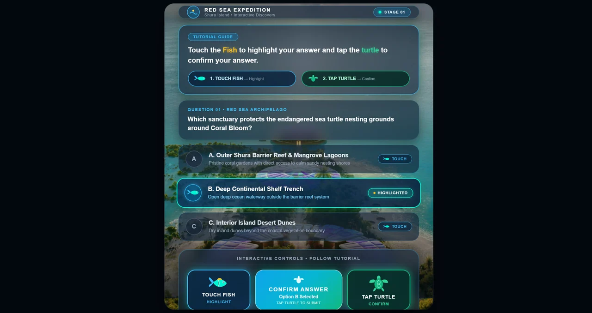
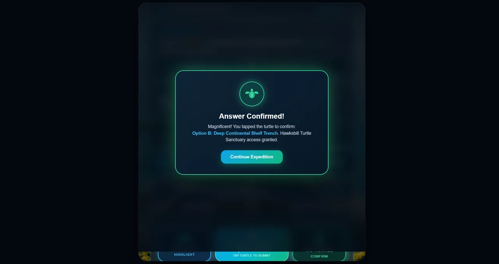

Three answer cards
The tutorial instructs the visitor to use the fish to highlight an answer and the turtle to confirm it; three answer cards sit below.
Choose with one action. Confirm with another.
Explore the story
Distinguish answer selection from confirmation in a physical-control quiz concept.
Three answer cards sit beneath the tutorial. Fish controls highlight a choice while the turtle confirms it, with both actions repeated in the lower control area.
The tutorial instructs the visitor to use the fish to highlight an answer and the turtle to confirm it; three answer cards sit below.
The first answer is visibly highlighted, and the bottom control area repeats the selection and confirmation actions.
Explore the complete compositions and interface states. Select any image for a closer look.
03 / PROJECT IMAGES
Select a view to explore.
The complete saved interface export introduces the fish-select and turtle-confirm interaction. Its original wide blank margin is retained.
Selection state: highlighting an option remains separate from confirming it. Quiz copy is retained source content.

Confirmation state: the selected answer is repeated before the visitor continues. This is an existing interface capture.

Structure, interaction and visual decisions that give the work its character.
RoleContribution awaiting confirmation
AssetsPrivate evidence draft. Individual contribution and public use are unverified. File presence does not establish personal authorship or original modeling; supplied, licensed and AI-assisted components must be credited separately.
StatusPrivate evidence draft; final delivery and contribution unverified